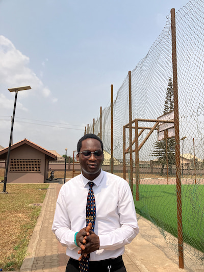

Favour Igein
My name is Favour Igein. I was born in Nigeria, Abeokuta Ogun state to be precise. I am currently pursuing a degree in Software Development through BYU - Idaho. I love coding, editing videos, playing games and wathing anime in my free time.


Official Flag Of Nigeria
Abeokuta, Ogun state
Abeokuta-meaning "Refuge Among Rocks" in Yoruba-is the historic and cultural heartbeat of Ogun State, southwestern Nigeria. Nestled along the east bank of the Ogun River, it's surrounded by dramatic granite outcrops and lush savanna, just about 77 km north of Lagos.